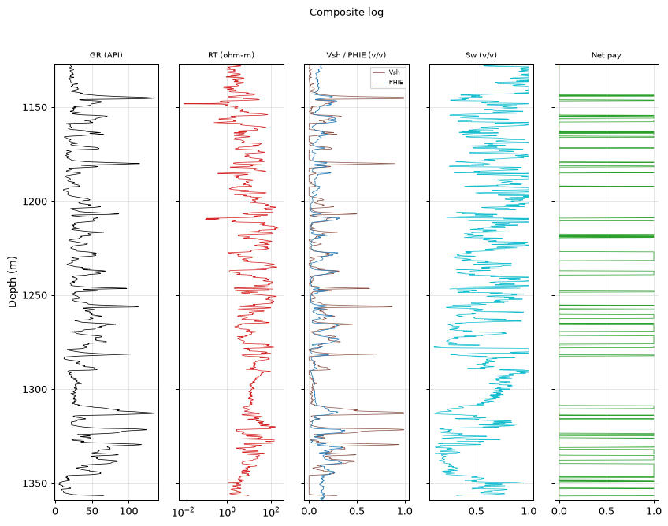
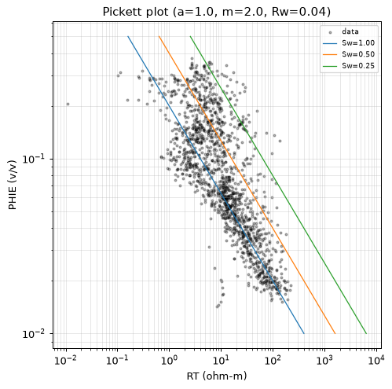
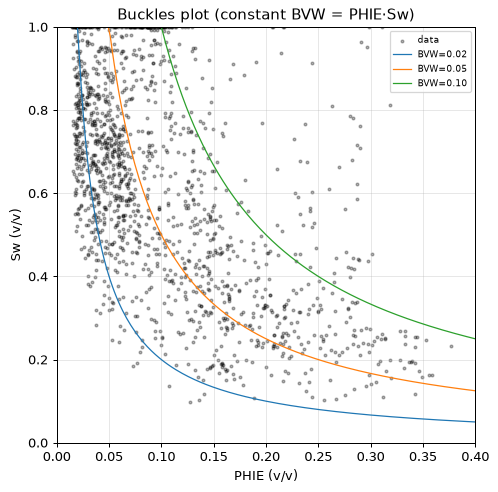
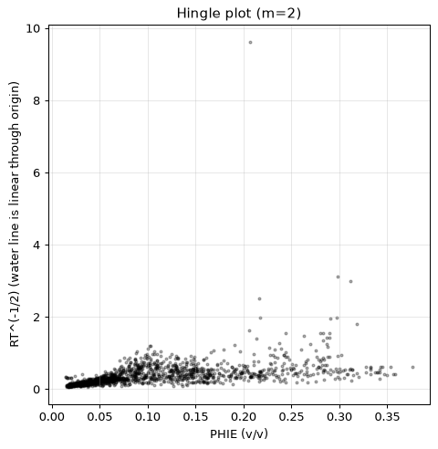
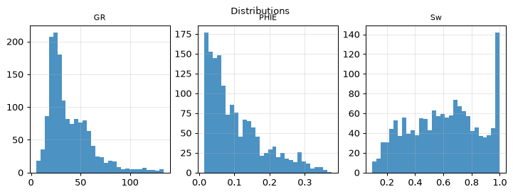
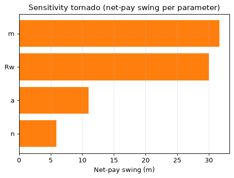
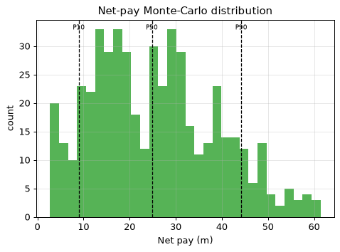

| Well (UWI) | 15-135-00612 |
| Log date | 08/06/66 |
| Acquisition date (header) | 08/06/66 |
| BHT (measured) | 115 DEGFG |
| Mud resistivity (RM) | 0.3 OHMM |
| Mud filtrate (RMF) | 0.2 OHMM |
| PLSS location | Sec 35 T19S R22W (map precision ±1.6 km) |
| Larionov variant | old_rocks (degraded) |
| Convergence status | DID_NOT_CONVERGE |
| Confidence tier | ○ BRACKETED |
| Engine versions | calc_vsh 0.1.0 · calc_phie 0.1.0 · calc_sw 0.1.0 · formula_registry 0.1.0 |
| Config hash (SHA-256) | 2a9cb78728e386ab… |
| Git SHA | bd23bea18153 |
| Generated | autonomously, no human in the per-report loop |
Confidence legend. Each result is tagged by parameter provenance: ● FIRM (core-calibrated) · ◐ QUALIFIED (offset-derived) · ○ BRACKETED (regional/global default — read as a range, dominant uncertainty stated). The system does not claim *always correct*; it states how well-supported each number is.
⚠️ ABSTENTION — this is NOT a confident estimate. The run did not converge to a defensible result; the numbers below are an uncalibrated engineering estimate, reported for transparency only:
- 1 unresolved MECHANICAL objection(s)
The vintage log covers only the deep consolidated section, so the full logged interval is evaluated — there is no overburden on record to exclude. Within that interval the net pay is 47.2 m with average effective porosity 0.186 and average water saturation 0.327. Monte-Carlo places the P50 net pay at 24.8 m within a P10-P90 range of 9.0 to 44.2 m. CLASS-B VINTAGE WELL: porosity comes from a count-rate neutron transform (engine-anchored, validated against sonic on offset wells; structural approximation) — every number is bracketed and must be read as a range. The run ABSTAINS from a confident estimate: the validators keep an unresolved objection, so the result must be read as a bracketed range, not a point value.
Net pay P10 / P50 / P90 = 9.0 / 24.8 / 44.2 m.
Net pay is dominated by 'm', which is a regional DEFAULT (uncalibrated). This is the single largest uncertainty — the result is bracketed, not a confident point estimate.
| Edit type | Curve | Detail |
|---|---|---|
| spike_removal | — | 16 edits |
| degradation | — | — |
Raw mnemonics mapped to canonical curve names:
| Canonical | Raw mnemonic |
|---|---|
| DT | DT |
| GR | GR |
| NEUT | NEUT |
| RT | RES |
Edits applied before compute (by type): degradation: 1, spike_removal: 16.
All numbers are produced by the deterministic, golden-tested engine. The LLM only selects methods/parameters and writes prose — it never computes a number. Figures are deterministic renderings of these computed numbers for the human reader; the agent reasons over the numeric EDA digest, not images (the models have no vision).
| Step | Method (frozen) | Version |
|---|---|---|
| Vsh | Larionov 1969 (old rocks) | vsh_larionov_old 0.1.0 |
| PHIE | Vintage count-rate neutron, two-point semilog (class-B, engine-anchored) | phi_neutron_countrate 0.1.0 |
| Sw | Archie 1942 | sw_archie 0.1.0 |
| Net pay | Vsh/PHIE/Sw cutoffs → net sand → net reservoir → net pay | netpay 0.1.0 |
| Uncertainty | Monte Carlo P10/P50/P90 + parameter sensitivity | mc 0.1.0 |
Low-resistivity scan: rt_threshold=2.1, n_flagged=150, intervals=[[1127.2, 1127.6], [1128.5, 1130.0], [1130.4, 1130.5], [1131.0, 1131.9], [1132.9, 1132.9], [1133.7, 1134.2], [1135.2, 1135.2], [1136.4, 1136.4], [1138.9, 1140.7], [1141.3, 1141.9]].
Composite log

Pickett plot

Buckles plot

Hingle plot

Distributions

Sensitivity tornado

Net-pay Monte-Carlo distribution

Mean Vsh by method (selection is the agent's; the LLM authors no number):
| Method | Mean Vsh | Selected |
|---|---|---|
| vsh_larionov_old | 0.122 | ✓ |
| vsh_larionov_tertiary | 0.082 | |
| vsh_linear | 0.192 | |
| vsh_clavier | 0.115 | |
| vsh_steiber | 0.096 |
_Not computed — no RHOB/NPHI curve for the comparison._
Mean Sw (Archie 1942) = 0.607 (a=1.00, m=2.00, n=2.00, Rw=0.0204 ohm-m). Electrical parameters are engine-sourced; alternative Sw models are optional sections.
Mean Sw by method (engine-computed comparison; the LLM authors no number):
| Method | Mean Sw | Selected |
|---|---|---|
| sw_archie | 0.607 | ✓ |
| sw_simandoux | 0.525 | |
| sw_indonesia | 0.551 |
Raw net-pay runs merged into 28 intervals (gap tolerance 1.5 m); showing the 15 thickest, depth-ordered. Full set traces in the ledger.
| Interval | Top (m) | Base (m) | Net pay (m) | Avg PHIE | Avg Sw | Avg Vsh |
|---|---|---|---|---|---|---|
| Z1 | 1154.3 | 1157.8 | 2.4 | 0.233 | 0.387 | 0.208 |
| Z2 | 1162.8 | 1166.0 | 2.3 | 0.148 | 0.415 | 0.146 |
| Z3 | 1181.3 | 1181.7 | 0.6 | 0.167 | 0.313 | 0.206 |
| Z4 | 1208.5 | 1210.4 | 0.8 | 0.220 | 0.356 | 0.211 |
| Z5 | 1217.7 | 1219.4 | 1.2 | 0.144 | 0.429 | 0.127 |
| Z6 | 1227.0 | 1231.5 | 4.7 | 0.183 | 0.377 | 0.116 |
| Z7 | 1237.2 | 1239.2 | 2.1 | 0.229 | 0.407 | 0.221 |
| Z8 | 1247.5 | 1248.3 | 0.9 | 0.161 | 0.420 | 0.151 |
| Z9 | 1260.3 | 1262.3 | 2.1 | 0.155 | 0.392 | 0.198 |
| Z10 | 1265.1 | 1269.2 | 3.7 | 0.230 | 0.306 | 0.208 |
| Z11 | 1271.6 | 1277.9 | 5.3 | 0.216 | 0.265 | 0.216 |
| Z12 | 1308.8 | 1310.3 | 1.7 | 0.154 | 0.347 | 0.202 |
| Z13 | 1323.6 | 1326.3 | 1.5 | 0.144 | 0.277 | 0.165 |
| Z14 | 1330.5 | 1337.6 | 5.5 | 0.180 | 0.205 | 0.247 |
| Z15 | 1339.7 | 1349.2 | 8.1 | 0.182 | 0.300 | 0.114 |
| Quantity | Value |
|---|---|
| Gross interval | 232.3 m |
| Net pay (P10/P50/P90) | 9.0 / 24.8 / 44.2 m |
| Net-to-gross | 0.203 |
| Avg PHIE (net pay) | 0.186 |
| Avg Sw (net pay) | 0.327 |
| Avg Vsh (net pay) | 0.178 |
Monte Carlo, 500 realizations (seed 42). Net pay swing per parameter (one-at-a-time):
| Parameter | Net-pay swing (m) |
|---|---|
| m | 31.7 |
| Rw | 30.0 |
| a | 11.0 |
| n | 5.9 |
Dominant uncertainty: m (swing 31.7 m).
Multi-seed robustness: P50 stable (spread 2.5 m across 4 seeds).
Net pay is dominated by 'm', which is a regional DEFAULT (uncalibrated). This is the single largest uncertainty — the result is bracketed, not a confident point estimate.
| Parameter | Value | Unit | Provenance | Source |
|---|---|---|---|---|
| gr_min | 20.000 | API | default | — |
| gr_max | 120.000 | API | default | — |
| rho_ma | 2.710 | g/cc | default | Schlumberger 1989 |
| rho_fl | 1.000 | g/cc | default | — |
| phie_max | 0.450 | v/v | default | — |
| phi_sh_d | 0.100 | v/v | default | — |
| phi_sh_n | 0.350 | v/v | default | — |
| a | 1.000 | - | default | Winsauer et al. 1952 |
| m | 2.000 | - | default | Archie, G.E. 1942 |
| n | 2.000 | - | default | Archie, G.E. 1942 |
| Rw | 0.040 | ohm-m | default | Kansas Geological Survey 2000 |
| rt_hydrocarbon_floor | 5.000 | ohm-m | default | — |
| vsh_cutoff | 0.350 | v/v | default | — |
| phie_cutoff | 0.100 | v/v | default | — |
| sw_cutoff | 0.500 | v/v | default | — |
| bit_size_config | 7.875 | in | default | — |
| qc_abort_threshold | 0.800 | - | default | — |
| circuit_breaker_n | 3.000 | - | default | — |
The citations table (not RAG) gives each cited parameter exactly one frozen source. Parameters tagged
defaultare regional/global — they drive the bracketed tier.
Boundary-inclusive criteria applied by the engine (netpay) to flag reservoir:
| Stage | Criterion | Cutoff | Provenance |
|---|---|---|---|
| Net sand | Vsh ≤ cutoff | 0.350 | default |
| Net reservoir | + PHIE ≥ cutoff | 0.100 | default |
| Net pay | + Sw ≤ cutoff | 0.500 | default |
Cutoff values are engine parameters (never LLM-authored); the dominant net-pay uncertainty is m — see Uncertainty for the swing.
Curve provenance (canonical ← raw mnemonic): DT←DT, GR←GR, NEUT←NEUT, RT←RES.
QC edits applied before compute — degradation: 1, spike_removal: 16.
| Validator | Type | Detail |
|---|---|---|
| vsh_phie_anticorrelation | support | Vsh-PHIE Pearson 0.98 > 0.3 (dirty rock + high porosity) |
| rt_sw_consistency | mechanical | 94 depths with Sw<0.4 but RT<5.0 ohm-m |
flowchart TD
dec_1["decision: step: compare_methods"]
act_1["tool_call: compare_methods"]
dec_2["decision: step: compute_vsh"]
act_2["tool_call: compute_vsh"]
dec_3["decision: step: compute_phie"]
act_3["tool_call: compute_phie"]
dec_4["decision: step: compare_methods"]
act_4["tool_call: compare_methods"]
dec_5["decision: step: compute_sw"]
act_5["tool_call: compute_sw"]
dec_6["decision: step: apply_cutoffs"]
act_6["tool_call: apply_cutoffs"]
dec_7["decision: step: run_uncertainty"]
act_7["tool_call: run_uncertainty"]
dec_8["decision: step: derived_parameters"]
act_8["tool_call: derived_parameters"]This is a LAS-only study. Data that would calibrate the interpretation is absent:
Vintage class-B well: logged interval covers only the deep consolidated section (no overburden recorded), GR-only clay indicator, count-rate porosity with engine anchors, Archie saturation. Structural-uncertainty caveat applies to every number. Method choices were made against the engine's numeric comparisons, not by preference; the comparison tables show the rejected alternatives beside the selected method. All numbers in this report come from the deterministic engine; the analyst chose the interval, the methods and the analyses, and wrote this prose — nothing more. Remaining uncertainty is dominated by the uncalibrated regional parameters.
{
"net_pay_total_m": 47.24399999998241,
"net_pay_p10_p50_p90": [
8.991599999996652,
24.84119999999075,
44.22647999998354
],
"driving_params": {
"a": 1.0,
"m": 2.0,
"n": 2.0,
"Rw": 0.04
},
"claim_verifier": {
"result": "PASS",
"flags": [],
"tone_flags": []
}
}| Item | Present |
|---|---|
| QC edits recorded before compute | ✓ |
| Every number ledger-traced | ✓ |
| Confidence tier on the run | ✓ |
| Parameter citations frozen | ✓ |
| Validator objections listed, not hidden | ✓ |
| Uncertainty propagated (Monte Carlo) | ✓ |
| Claim verifier run on prose | ✓ |